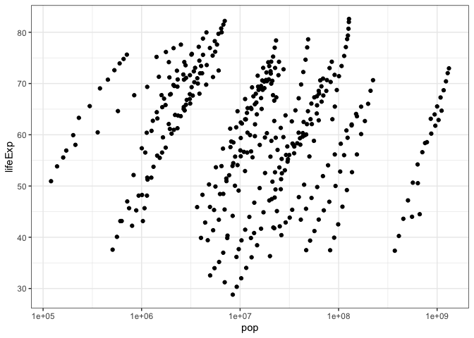
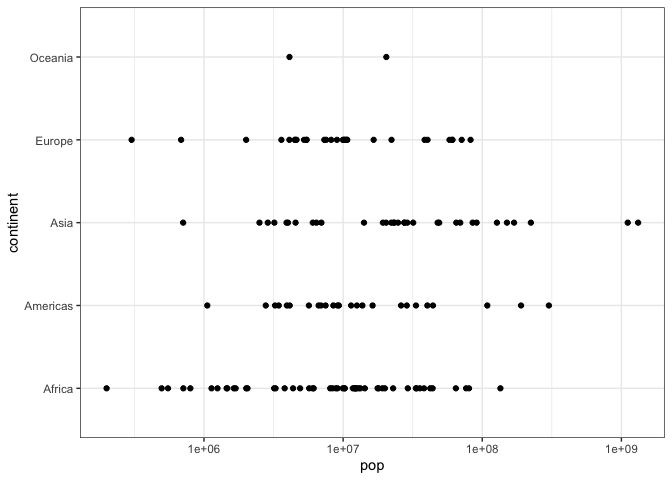
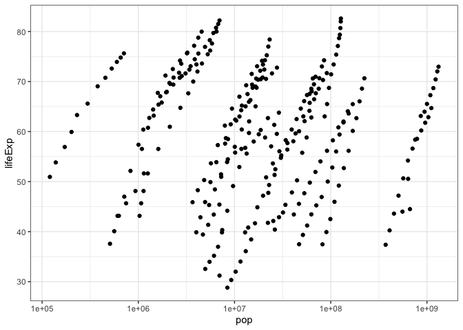
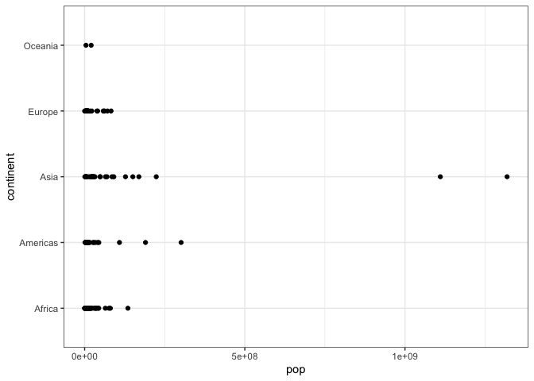

fancyplots
The goal of fancyplots is to make logarithmically scaled x axis scatter plots and nothing more.
You can install the released version of fancyplots from my github repo with:
devtools::install_github("kaitsull/fancyplots")devtools!devtools package, I instantiated the package with the command: create_tidy_package("fancyplots") and then created a git repo on my local computer via use_git.use_r("scatter_plot_logx"), and added documentation using roxygen2 special commenting with the #' symbol combination.ggplot2, I added this dependency to my description file using use_package("ggplot2")
use_test("scatterplot") command (via first using the use_testthat() function) to write multiple tests which I checked via the check() function!use_readme_rmd() and build_readme()) - as well as a vignette (via use_vignettes() and build_vingnettes())use_github()
BONUS:
scatter_plot_logx
(the only function in this package :sweat_smile:)
Here is how fancyplots scatter_plot_x function works with the gapminder dataset. In this example, our y axis will be lifeExp, which contains the average life expectancy of each country over the years.
This graph shows population vs life expectancy in the countries of Asia from 1952-2007.
library(fancyplots)
example1 <- filter(gapminder, continent == "Asia")
scatter_plot_logx(example1, "pop", "lifeExp")
#> Removing NA values from the data set...
#> Plotting columns "pop" vs "lifeExp"
#> Printing plot...
Here is how fancyplots scatter_plot_x function works with the gapminder dataset. In this example, our y axis will be continent.
This graph shows us the spread of the population in the countries of each continent in 2007.
library(fancyplots)
example2 <- filter(gapminder, year == 2007)
scatter_plot_logx(example2, "pop", "continent")
#> Removing NA values from the data set...
#> Plotting columns "pop" vs "continent"
#> Printing plot...
na.omit
The scale_log_x by default removes any NA’s within your dataset via na.omit = TRUE!
Below is plotting of example 1 with multiple NAs inserted.
#adding NAs to rows 150-250
example1[150:250, ] <- NA
scatter_plot_logx(example1, "pop", "lifeExp", na.omit = TRUE)
#> Removing NA values from the data set...
#> Plotting columns "pop" vs "lifeExp"
#> Printing plot...
#> Warning: Removed 101 rows containing missing values (geom_point).
logx
The scale_log_x by default scales the x axis of your plot via logx = TRUE!
Below is example 2, plotting with logx = FALSE
scatter_plot_logx(example2, "pop", "continent", logx = FALSE)
#> Removing NA values from the data set...
#> Plotting columns "pop" vs "continent"
#> Printing plot...